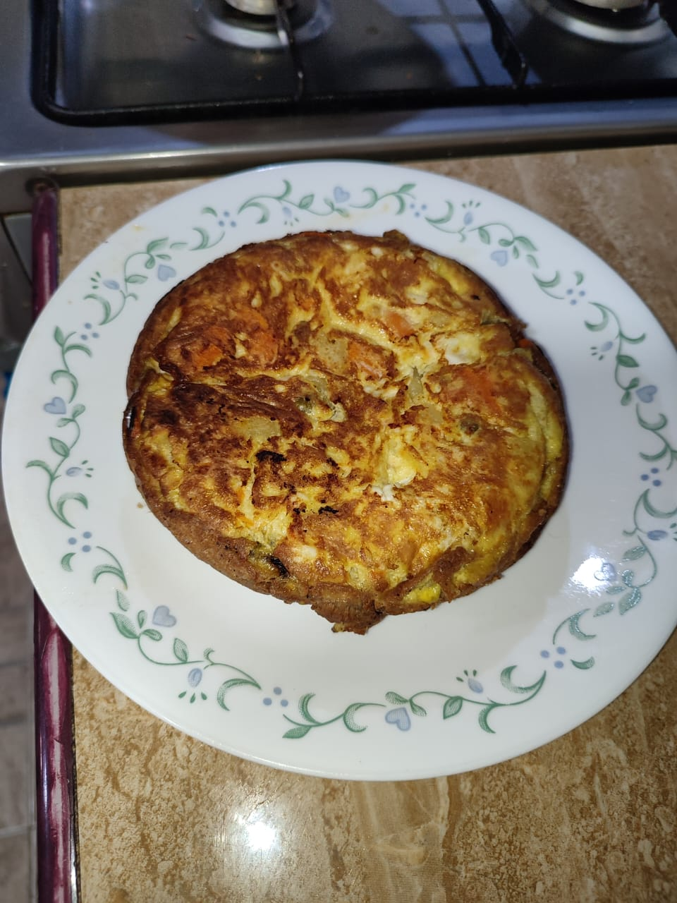

Spanish Tortilla

The first spanish-tortilla I made by my own :D
Ingredients (for two people)
- 7 Potatoes
- 9 eggs
- 3 big onions
- Salt
- Pepper
- Oil
Steps
- Fry the potatoes untill they are quite soft
- add the onions near to the end of the potatoes cook process
- Add both of them to a ball with the nine 9 eggs previously mixed and seasoned with salt and pepper
- try the flavours, and act upon it
- put that mix in a hot pan with a little of oil and move it so it wont get stuck
- when you feel you have to turn it around, do it, use a plate to do so
- cook until you see great brown and goldish colours and smells